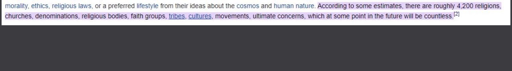
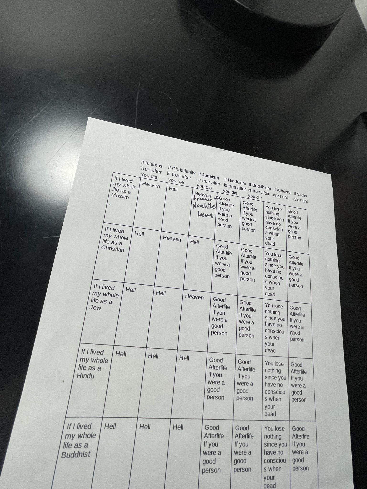
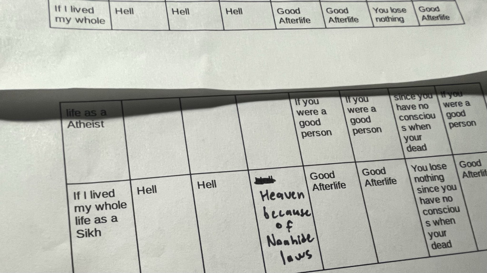
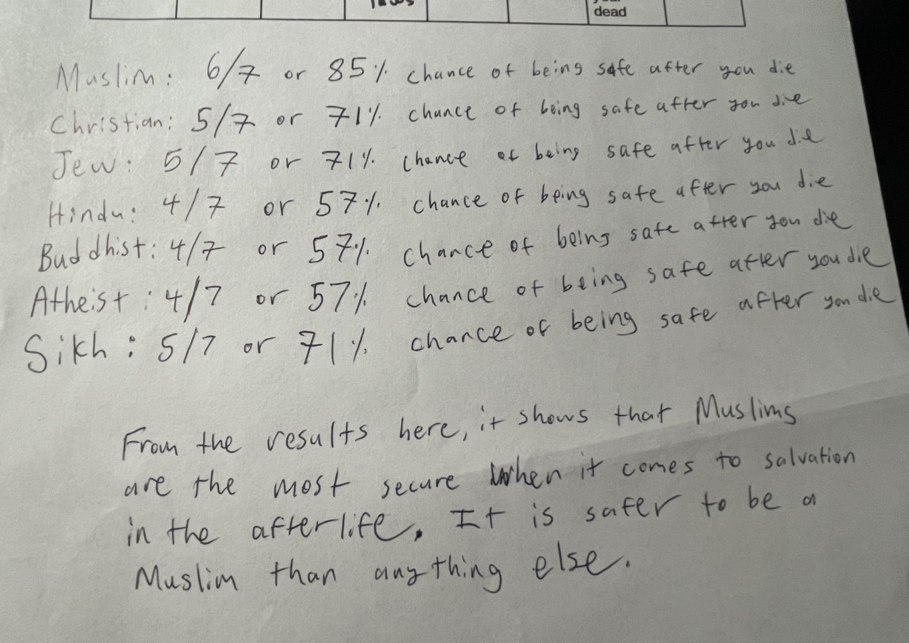

Refuting the Claim of There Being 3000/4000/10,000 Religions and Gods
This “3000” or “4000” or “10,000” religions claim that atheists keep parroting is actually false. They google how many religions there are and it turns out that they're misrepresenting a source from 1999 used in Wikipedia. The source actually lists ethnicities, cultures, denominations etc.
Link below: 👇
https://web.archive.org/web/19990422162501/http://www.adherents.com/

—————-
Why Your the Safest Being a Muslim then anything else
It’s common to hear the objection of Non-Muslims of “There are so many religions in the world, how do you know that yours is correct?” or “What if you die and it turns out X religion/ideology is true instead of Islam, then what?”
We could answer by showing them arguments and proofs for Islam like the linguistic, and historical miracles of the Quran, the prophecies within the Quran, the prophecies Muhammad pbuh made within the Hadith, the accuracy and preservation of the Quran and Hadith, philosophical arguments for God’s existence, etc.
However I’m not gonna do that. I’m gonna play total devil’s advocate and show you that if we take the major religions and ideologies of the world today, then your best option is to be a Muslim. Think of this as Pascal’s Wager on steroids.
Here’s a graph with the major world’s religions and ideologies, and what would happen to each adherent if X religion/ideology turned out to be true after they died.



People often say ‘there are thousands of religion how do we know which is the true one’
However it is important to note that if God sent down a religion for guidance it would need to be a major one or else it wasn’t intended to be guidance for humanity, as it’s not easily accessible.
In other words you can eliminate the 1000+ small religion and only consider the major ones:
Islam
Christianity
Judaism
Hinduism
And maybe sikhism
And from these You can use objective criterion of truth
1.logical core beliefs
2.scripture claims to be from God
(Or else why would one impose that)
3.scripture is preserved( so we know what us and isn’t from God and that all of message is there)
4.scripture has no contradictions
5.Scripture has divine proof
Using these criterion
We can eliminate Christianity as it fulfills no criterion. Trinity is illogical, it has preservation issues, Bible doesn’t claim to be from God and bible filled with contradictions
Judaism has some issues with its concept of God like God forgetting, but also severe preservation issues(oldest manuscript 1000+ years after)
Hinduism has illogical core beliefs with its many Gods, scholars don’t even know how old the scripture is
And sikhism is an inherently contradictory belief system as it claims everyone has their own truth
And everyones truth renders others false
Also you don’t need to be a sikh according to sikhism so pascals wager
So what’s left
Islam